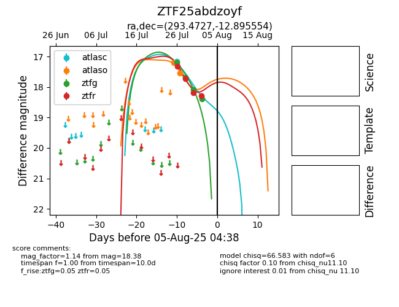

Target ZTF25abdzoyf at 2025-08-05 04:38, see:
FINK: fink-portal.org/ZTF25abdzoyf
Lasair: lasair-ztf.lsst.ac.uk/objects/ZTF25abdzoyf
ALeRCE: alerce.online/object/ZTF25abdzoyf
alt names
ZTF25abdzoyf (ztf,fink)
coordinates:
equatorial (ra, dec) = (293.4727,-12.89555)
galactic (l, b) = (25.9839,-15.16179)
photometry
last atlasc=17.15, atlaso=17.54, ztfg=18.38, ztfr=18.28
1 atlasc, 2 atlaso, 4 ztfg, 4 ztfr detections
